物料管理 MM（Materials Management）
物料管理 · 组织结构 · 物料主数据 · 自动记账 · MRP · 采购流程
1. 本模块导读
MM 主线是「组织结构与工厂参数 → 物料主数据 → 自动记账 → MRP → 采购到发票校验」：工厂 / 库存地点 / 采购组织 / 采购组 / MRP 控制者 → 分配给公司代码与采购组织 → 物料组、计划边际码 → 工厂参数（库存预留、库存地点视图、税务代码缺省值、初始期间、MRP 参数）→ 激活 MRP、计划运行号码范围 → 物料类型属性、评估控制、评估类（科目确定的前提）→ 物料主数据（原材料 / 贸易商品 / 产成品，MM01）→ 供应商采购数据（MK01）与采购信息记录（ME11）→ 自动记账（OBYC）与存货科目只能自动记账 → 容差限制（价格差异 / 收货 / 发票冻结）→ MRP 运行（MD03）与库存需求清单（MD04）→ 采购申请（ME51N）→ 采购订单（ME21N）→ 收货（MIGO）→ 发票校验（MIRO）→ 冻结发票下达（MRBR）→ 发票与会计凭证 → 库存显示（MMBE）。
其中「评估类 + 自动记账（OBYC/BSX/WRX）」是 MM 与 FI 的接缝，也是原文档反复排错的地方（见「排错与踩坑」页）。
- 组织结构四件套：工厂 / 库存地点 / 采购组织 / 采购组，及其分配关系
- 物料主数据三类视图：基本数据、采购、MRP、会计（评估类决定记账科目）
- 自动记账
OBYC：BSX（存货）、WRX（GR/IR）、GBB（费用/差异）等事务码的科目确定 - 采购全流程：
ME51N→ME21N→MIGO→MIRO→MRBR
文档中出现的 T-code：MM60 MK01 ME11 MM02 FS00 MD03 MD04 ME51N ME21N MIGO MIRO MRBR MMBE（完整说明见 T-code / IMG 路径速查）
2. 任务目录（42 个）
其中 42 个任务给出了原文档中的 IMG 后台菜单路径；带 后台 标注的是定制（配置）任务，带 前台 标注的是日常业务操作任务；没有标注的任务原文未指明，请按任务名自行判断（一般「定义/维护…参数」＝后台，「创建/输入/显示…凭证、订单、发票」＝前台）。
| 序号 | 任务 | 前后台 | 文档中的 T-code | 画面 | 手顺步 |
|---|---|---|---|---|---|
| 任务 01 | 创建工厂 | 后台 | — | 7 | 3 |
| 任务 02 | 创建库存地点 | 后台 | — | 4 | 4 |
| 任务 03 | 创建采购组织 | 后台 | — | 3 | 3 |
| 任务 04 | 创建采购组 | 后台 | — | 3 | 3 |
| 任务 05 | 定义MRP 控制者 | 后台 | — | 4 | 3 |
| 任务 06 | 分配工厂到公司代码 | 后台 | — | 3 | 3 |
| 任务 07 | 分配采购组织到公司代码 | — | — | 4 | 3 |
| 任务 08 | 分配工厂到采购组织 | 后台 | — | 2 | 2 |
| 任务 09 | 定义物料组 | — | — | 3 | 3 |
| 任务 10 | 定义计划边际码 | 后台 | — | 3 | 2 |
| 任务 11 | 维护工厂和库存相关的工厂参数－库存预留 | 后台 | — | 3 | 3 |
| 任务 12 | 维护和库存相关的工厂参数－自动创建物料的库存地点视图 | 后台 | — | 3 | 2 |
| 任务 13 | 维护税务代码的缺省值 | 后台 | — | 3 | 3 |
| 任务 14 | 维护公司代码下物料管理的初始期间 | 后台 | — | 2 | 2 |
| 任务 15 | 维护和物料需求计划相关的工厂参数 | 后台 | — | 16 | 8 |
| 任务 16 | 激活物料需求计划 | 后台 | — | 3 | 3 |
| 任务 17 | 定义计划运行的号码范围 | 后台 | — | 7 | 4 |
| 任务 18 | 定义物料类型的属性 | 后台 | — | 3 | 3 |
| 任务 19 | 定义评估控制 | 后台 | — | 4 | 1 |
| 任务 20 | 将评估范围集合分组 | 后台 | — | 2 | 2 |
| 任务 21 | 定义评估类 | 后台 | — | 6 | 3 |
| 任务 22 | 新建原材料主数据 | — | — | 15 | 9 |
| 任务 23 | 新建贸易商品主数据 | — | — | 12 | 5 |
| 任务 24 | 新建产成品主数据 | — | — | 10 | 4 |
| 任务 25 | 显示物料主记录清单 | 前台 | MM60 | 3 | 1 |
| 任务 26 | 创建供应商采购数据 | 前台 | MK01 | 8 | 5 |
| 任务 27 | 新建采购信息记录 | 前台 | ME11 MM02 | 16 | 9 |
| 任务 28 | 维护物料管理的自动记帐 | 后台 | — | 15 | 13 |
| 任务 29 | 将存货科目设置为只能自动记帐 | 前台 | FS00 | 3 | 2 |
| 任务 30 | 设置采购价格差异的容差限制 | 后台 | — | 6 | 3 |
| 任务 31 | 设置收货的容差限制 | 后台 | — | 5 | 4 |
| 任务 32 | 设置发票冻结的容差限制 | 后台 | — | 18 | 6 |
| 任务 33 | 维护项目金额检查 | 后台 | — | 3 | 3 |
| 任务 34 | 运行物料需求计划 | 前台 | MD03 | 10 | 4 |
| 任务 35 | 显示库存/需求清单 | 前台 | MD04 | 3 | 3 |
| 任务 36 | 新建采购申请 | — | ME51N | 6 | 6 |
| 任务 37 | 新建采购订单 | 前台 | ME21N | 9 | 8 |
| 任务 38 | 创建采购收货 | — | MIGO | 8 | 7 |
| 任务 39 | 输入采购发票 | — | MIRO | 5 | 4 |
| 任务 40 | 下达冻结发票 | — | MRBR | 4 | 2 |
| 任务 41 | 显示发票和会计凭证 | — | — | 4 | 4 |
| 任务 42 | 显示库存物料 | 前台 | MMBE | 3 | 3 |
3. 手顺（逐个任务）
创建工厂
后台7 画面 / 3 步-
按上一屏继续操作（画面 516）

画面 516image524.png · 388×410 
画面 517image525.png · 641×680 -
双击定义工厂
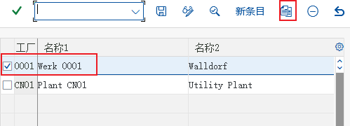
画面 518image526.png · 499×180 -
选择 0001，点击复制

画面 519image529.png · 469×623 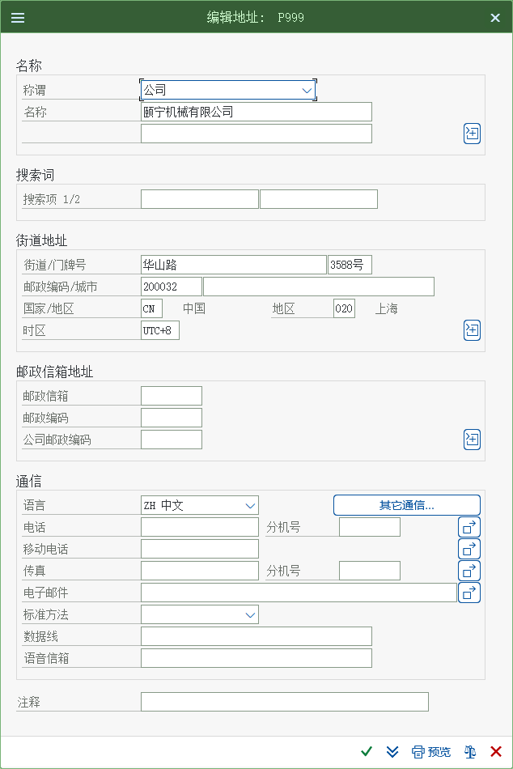
画面 520image530.png · 634×950 画面 519image529.png · 469×623 画面 520image530.png · 634×950
创建库存地点
后台4 画面 / 4 步-
企业结构－定义－物料管理－维护仓储地点
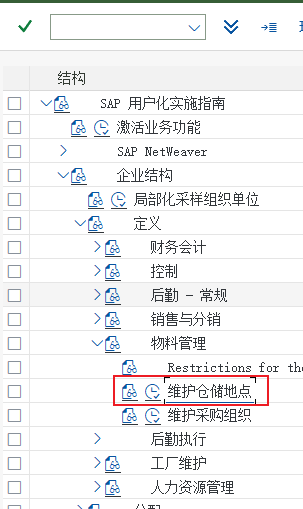
画面 523image531.png · 303×509 -
按上一屏继续操作（画面 524）

画面 524image532.png · 403×248 -
回车

画面 525image533.png · 423×173 -
点击新条目

画面 526image534.png · 377×252 教材笔记0003 运输教材笔记0001 仓库教材笔记0002 生产
创建采购组织
后台3 画面 / 3 步-
企业结构－定义－物料管理－维护采购组织
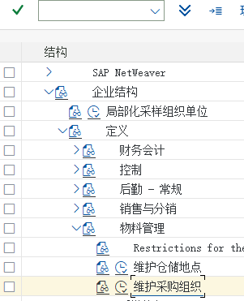
画面 527image535.png · 301×371 -
按上一屏继续操作（画面 528）
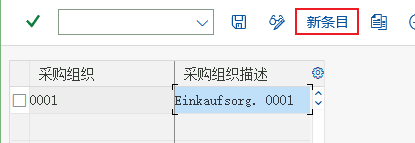
画面 528image536.png · 415×143 -
点击新条目

画面 529image537.png · 365×249 教材笔记Y999 颐宁采购组织
创建采购组
后台3 画面 / 3 步-
物料管理－采购－创建采购组

画面 530image538.png · 501×259 -
按上一屏继续操作（画面 531）

画面 531image539.png · 616×206 -
点击新条目

画面 532image540.png · 630×205 教材笔记PG1 原材料和运营供应教材笔记PG2 贸易商品
定义MRP 控制者
后台4 画面 / 3 步| 项目 | 文档中的取值 |
|---|---|
| 工厂 | P999 |
| 工厂 | P999 |
-
生产－物料需求计划－主数据－定义 MRP 控制者
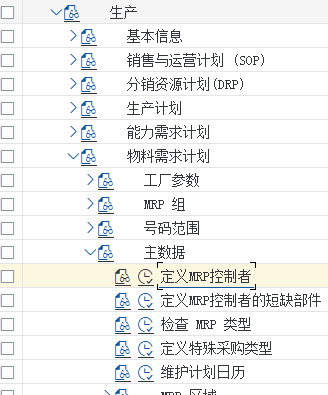
画面 533image541.png · 328×395 
画面 534image542.png · 545×280 -
点击新条目

画面 535image543.png · 520×497 -
MRP 控制者 001 自制品
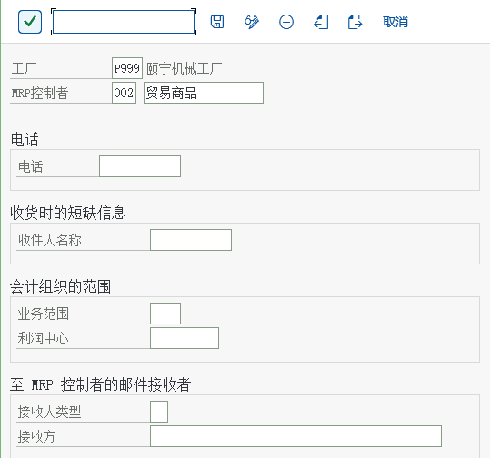
画面 536image544.png · 539×504 教材笔记MRP 控制者 002 贸易商品
分配工厂到公司代码
后台3 画面 / 3 步-
企业结构－分配－"后勤-常规"－给公司代码分配工厂
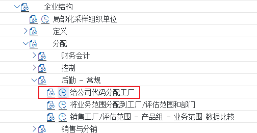
画面 537image545.png · 504×261 -
按上一屏继续操作（画面 538）

画面 538image546.png · 610×171 -
点击新条目，选择 C999，选择P999工厂，点击保存按钮

画面 539image547.png · 636×179
分配采购组织到公司代码
4 画面 / 3 步-

画面 540image548.png · 355×313 -
解释: 一个采购组织可以同时负责几个工厂的采购后台
企业结构－分配－物料管理－给公司代码分配采购组织
画面 541image549.png · 600×172 -
选择 C999 点击保存按钮
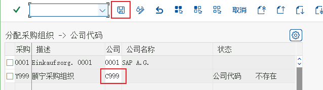
画面 542image550.png · 638×179 
画面 543image551.png · 624×190
分配工厂到采购组织
后台2 画面 / 2 步-
企业结构－分配－物料管理－给工厂分配采购组织

画面 544image552.png · 440×313 -
采购选择 Y999，工厂选择P999 点击保存采购选择 Y999，工厂选择P999 点击保存点击新条目
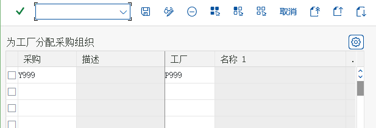
画面 545image553.png · 617×210 教材笔记点击确认后，点击保存按钮
定义物料组
3 画面 / 3 步-
后勤常规－物料主记录－设置关键字段－定义物料组
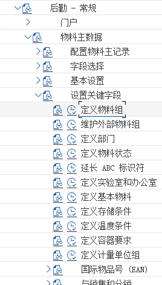
画面 546image554.png · 268×471 -
解释： 物料需要按三个组来统计分析，在维护物料主数据的时候，需要分配物料组后台
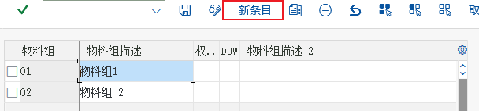
画面 547image555.png · 608×142 -
点击新条目，新增 三个物料组

画面 548image556.png · 612×163
| 0001 | 原材料 |
| 0002 | 产成品 |
| 0003 | 贸易商品 |
定义计划边际码
后台3 画面 / 2 步-
物料管理－基于消费的计划－计划－定义浮点（计划毛利码）

画面 549image557.png · 446×569 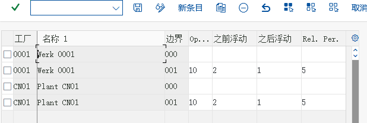
画面 550image558.png · 618×207 -
点击新条目

画面 551image559.png · 627×185
维护工厂和库存相关的工厂参数－库存预留
后台3 画面 / 3 步-
工厂中有非常多的控制参数，比如在库存管理中，对物料可以通过预留号进行预留，比如预留给生产订单或销售订单。在此工厂里，对库存的预留允许比计划日期提前一个月使用，同时过期 1 个月以内的预留仍然可以使用

画面 552image560.png · 377×257 -
按上一屏继续操作（画面 553）

画面 553image561.png · 427×165 -
点击新条目

画面 554image562.png · 525×687 教材笔记选择许可的移动，指是否允许对预留货物进行货物移动的控制 允许移动的天数，指比预留计划使用日期提前 30 天允许使用预留教材笔记保持期间，指预留计划使用日期过去 30 天内，预留仍可以使用
维护和库存相关的工厂参数－自动创建物料的库存地点视图
后台3 画面 / 2 步-
在本工厂里，对具体哪个物料可以存放在哪个库存地点没有硬性规定，根据情况任何物料在三个库存地点存放都有可能

画面 555image563.png · 373×499 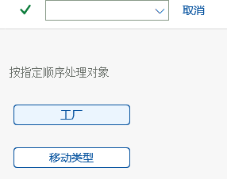
画面 556image564.png · 286×226 -
只有当一个工厂和正在操作的物料移动类型都允许时，系统才会自动创建物料的库存地点视图。对于移动类型，我们保留系统的标准设置。点击工厂。

画面 557image565.png · 497×189 教材笔记选择 P999，点击自动创建库存地点
维护税务代码的缺省值
后台3 画面 / 3 步-
物料管理－后勤发票校验－收入发票－维护税代码的缺省值
在此公司里的采购发票大多数是 13％的增值税发票(中国税法 13%,5%,还分进项税和销项税)，所以这里设置为缺省值方便发票校验，当然缺省值在作业务操作时时可以更改的。
画面 558image566.png · 399×536 -
按上一屏继续操作（画面 559）

画面 559image567.png · 421×221 -
点击新条目

画面 560image568.png · 443×342
维护公司代码下物料管理的初始期间
后台2 画面 / 2 步-
物料管理在 SAP 中只能开当前月的帐，或者之多当月和上个月的帐，而且开帐只允许一个月一个月的向后开，所以在一开始我们要设定一个初始期间。一般初始期间设置为上线前的那个月，比如 2021年 12 月上线，就设定初始期间为 2021 年 11 月，在 11 月中导入期末库存余额。
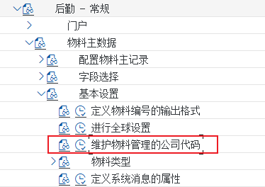
画面 561image569.png · 374×264 -
按上一屏继续操作（画面 562）

画面 562image570.png · 634×449 教材笔记年填写本年，月填写本月，Abp 打开，指同时打开上个月的库存帐
维护和物料需求计划相关的工厂参数
后台16 画面 / 8 步-
前面我们维护了库存相关的工厂参数。本步骤中，我们要维护和物料需求计划 MRP 相关的工厂参数，由于涉及参数太多，我们采用复制 0001 工厂再更改

画面 563image573.png · 313×158 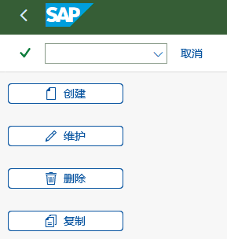
画面 564image574.png · 289×304 画面 563image573.png · 313×158 画面 564image574.png · 289×304 -
点击创建

画面 567image575.png · 459×235 -
按上一屏继续操作（画面 568）
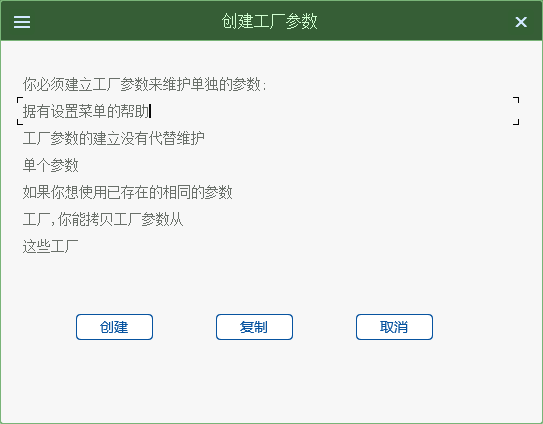
画面 568image576.png · 543×424 -
点击复制键
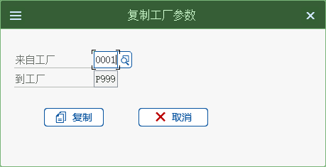
画面 569image577.png · 459×235 -
系统显示，0001 的参数已经拷贝至 P999，接下来将不合适的参数改掉，点击维护按钮点击维护

画面 570image578.png · 277×32 
画面 571image581.png · 262×249 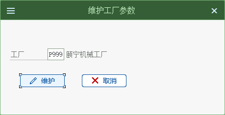
画面 572image582.png · 459×235 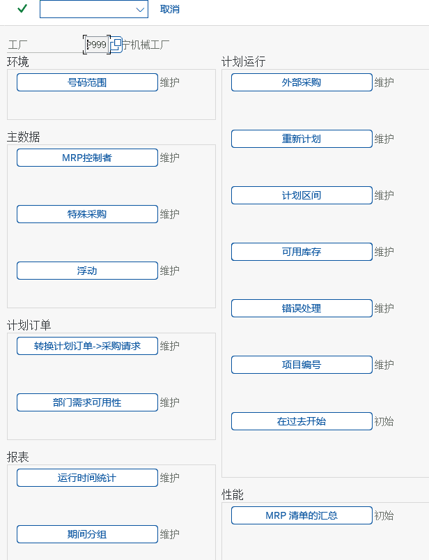
画面 573image583.png · 616×803 画面 571image581.png · 262×249 画面 572image582.png · 459×235 -
点击维护按钮
“维护”表示已经维护了，“ 初始”代表尚未维护，点击号码范围键，进入：
画面 576image584.png · 308×508 -
相关物料需求计划的号码范围已经全部维护，点击退回键，点击浮动
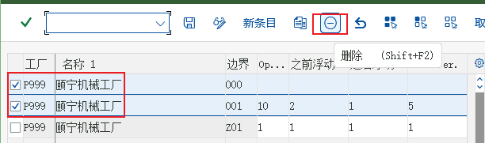
画面 577image585.png · 612×181 -
如图所示，其余复制的都删除掉。删除之后的最终结果如下：

画面 578image586.png · 605×109
激活物料需求计划
后台3 画面 / 3 步-
物料管理－基于消费的计划－计划－激活物料需求计划
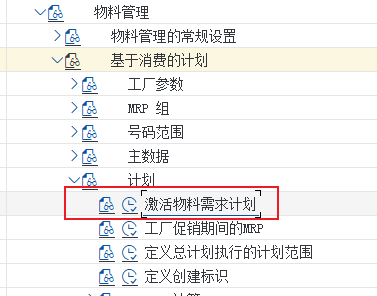
画面 579image587.png · 377×296 -
按上一屏继续操作（画面 580）
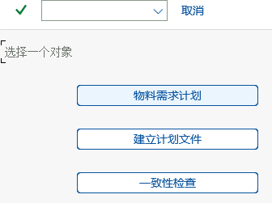
画面 580image588.png · 336×251 -
点击物料需求计划，选中 P999 行，勾上激活需求计划栏的方框，点击保存。
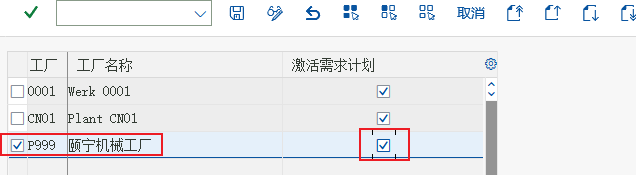
画面 581image589.png · 636×175
定义计划运行的号码范围
后台7 画面 / 4 步解释：在复制物料需求计划相关的工厂参数时，编号范围一起复制了，确认 MRP 中所有的对象都分配了号码范围(01)。
-
物料管理－基于消费的计划－号码范围－定义计划运行的号码范围

画面 582image592.png · 391×273 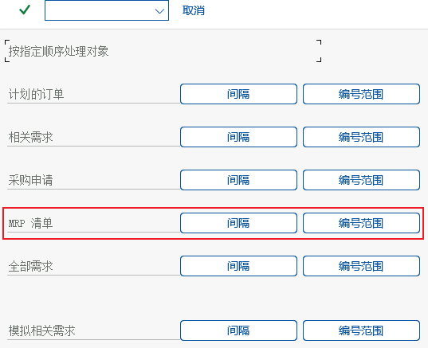
画面 583image593.png · 537×437 画面 582image592.png · 391×273 画面 583image593.png · 537×437 -
解释： 屏幕中每一行是一种 MRP 相关的凭证，间隔按钮里是编号间隔的定义，编号范围按钮里是分配编号间隔。
点击 MRP 清单号码范围的间隔按钮，进入
画面 586image594.png · 443×149 -
点击修改间隔，进入

画面 587image595.png · 579×138 -
系统中已经有一个号码范围间隔，我们将使用间隔 01
退出，点击 MRP 清单号码范围的编号范围，进入：
画面 588image596.png · 437×187 教材笔记P999 工厂选择 01 号码范围
定义物料类型的属性
后台3 画面 / 3 步-
解释： 物料类型是定义物料主数据最重要的一个参数，它决定了各类物料主数据需要维护哪些信息和参数，物料主数据的编号范围等。颐宁公司决定使用 SAP 的标准物料类型，如 HAWA 贸易商品，ROH 原材料，FERT 产成品。
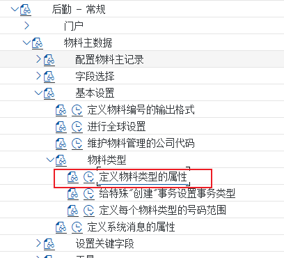
画面 589image597.png · 408×370 -
按上一屏继续操作（画面 590）
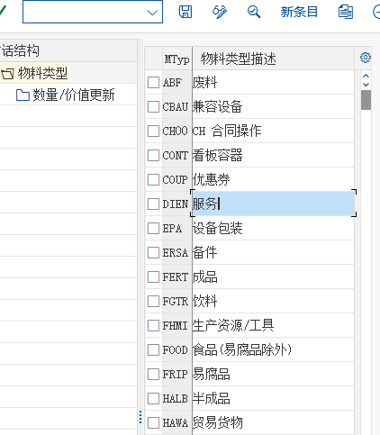
画面 590image598.png · 422×483 -
解释： 屏幕的右方是目前系统中已经有的物料类型清单，左侧是分层维护物料类型的参数，双击相关的物料类型可以进入第一层：“ 物料类型” 参数定义。我们不改变系统标准的设置，我们维护第二层，物料类型在各工厂“数量/价值更新”。
选择物料类型“HAWA”贸易货物，双击左栏的“数量/价值更新”进入如下：
画面 591image599.png · 623×248 教材笔记选中P999中的数量更新及值更新原理说明解释：我们可以定义一种物料类型，在某个工厂里可以是“无价值库存”，即只记录数量，不更新价值，或者是“无数量库存”。
定义评估控制
后台4 画面 / 1 步解释：物料管理和财务会计最大的集成点是自动记账，也就是 MM 中的物料移动会自动产生相应的会计凭证。本步骤和随后的两个步骤是为了定义自动记账做准备，而自动记账则在4.28维护物料管理的自动记账中定义。
-
为了使之具有更大的灵活性，在各自工厂自动记账规则是可以不同的。但是如果一个集团公司有很多工厂，而它们的记账规则又是一样的，那一个一个地维护岂不是非常麻烦？而且也不好维护，容易出错，所以 SAP 允许将工厂集合成“组”来统一定义记账规则，工厂在记账规则中被定义为“评估范围”，而它的组被称为“评估分组代码”。本步骤中，我们将明确是否允许这样分组定义记账规则。下一个步骤是将“评估范围”归并到“评估分组代码”
物料管理－评估和科目设置－科目确定－无向导的科目定义－定义评估控制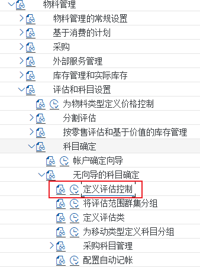
画面 592image602.png · 338×451 
画面 593image603.png · 454×237 画面 592image602.png · 338×451 画面 593image603.png · 454×237 教材笔记此图里我们可以选择激活按 “ 评估分组代码活动” 来定义科目，还是不激活（也就是只能按一个一个工厂一个一个地定义科目），在此我们选择“评估分组代码活动”
将评估范围集合分组
后台2 画面 / 2 步-
解释： 紧跟上个步骤，我们将“颐宁机械工厂”评估范围（或工厂），归入一个我们称之为 “ CN01 ” 的评估分组代码。将来自动记账规则的定义就是按 “ CN01 ” 来定义的。如果颐宁公司增加一个工厂，只需要将它们分配给“CN01”就可以自动记账了，而不必再定义一套记账规则。
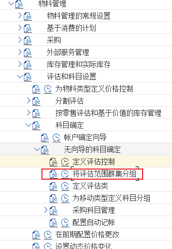
画面 596image604.png · 340×492 -
在 P999 输入 CN01

画面 597image605.png · 613×208
定义评估类
后台6 画面 / 3 步准的评估类，主要有三个“3000 原材料”，“ 3100 贸易商品”，“ 7920 成品”。本步骤主要
-
就是检查系统标准的评估类，并检查这些评估类被分配给了合适的物料类型，将来在物料主数据维护时，保证只有合适的评估类可以被某类型的物料选用
物料管理－评估和科目设置－科目确定－无向导的科目确定－定义评估类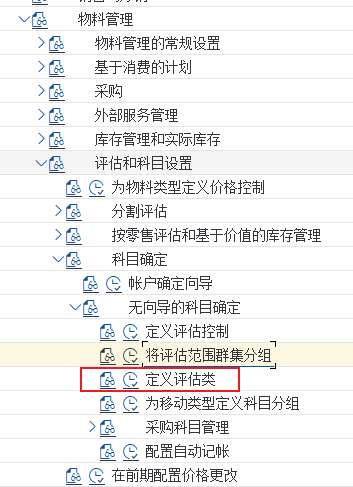
画面 598image606.png · 353×487 -
点击评估类点击评估类

画面 599image609.png · 349×259 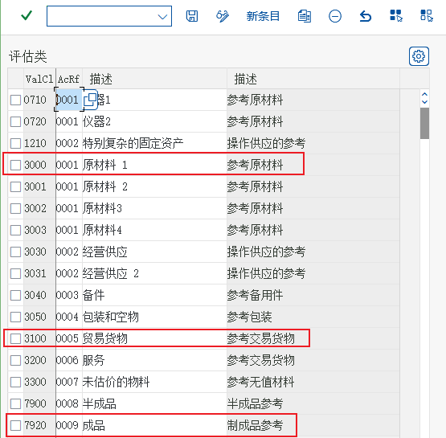
画面 600image610.png · 555×545 画面 599image609.png · 349×259 画面 600image610.png · 555×545 -
可以看到 3000、3100、7920 都已经存在，返回，点击“物料类型/账户分类参考”
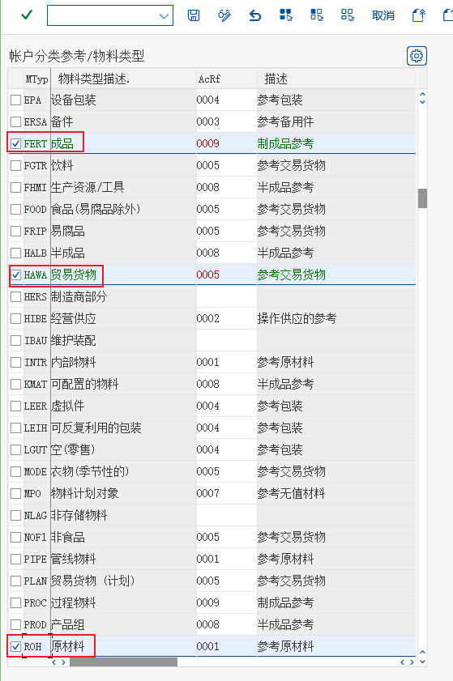
画面 603image611.png · 559×841 原理说明解释：可以增、删、改、复制评估类，评估类旁边的“账户分类参考”是对评估类的分组。 “账户分类参考”本身在上图“账户分类参考”按钮中维护，而我们通过前一个屏幕的 “ 物料类型/账户分类参考”按钮将“账户分类参考”分配给各物料类型。教材笔记可以看到 FERT、HAWA 和 ROH 都已经存在，点击返回。
新建原材料主数据
15 画面 / 9 步-
解释： 颐宁公司主要的原材料有，飞轮、管轴等，我们要新建这些原材料主数据
后勤－物料管理－物料主数据－物料－创建（特殊）－MMR1 原材料
画面 604image612.png · 373×667 教材笔记输入事务代码 MMR1 进入如下页面： R999-100 罩壳 -
按上一屏继续操作（画面 605）

画面 605image613.png · 476×289 -
物料类型决定了哪些视图是可维护的，如下 ROH 就没有销售视图

画面 606image617.png · 346×707 
画面 607image618.png · 346×707 
画面 608image619.png · 543×356 画面 606image617.png · 346×707 画面 607image618.png · 346×707 画面 608image619.png · 543×356 -
点击回车
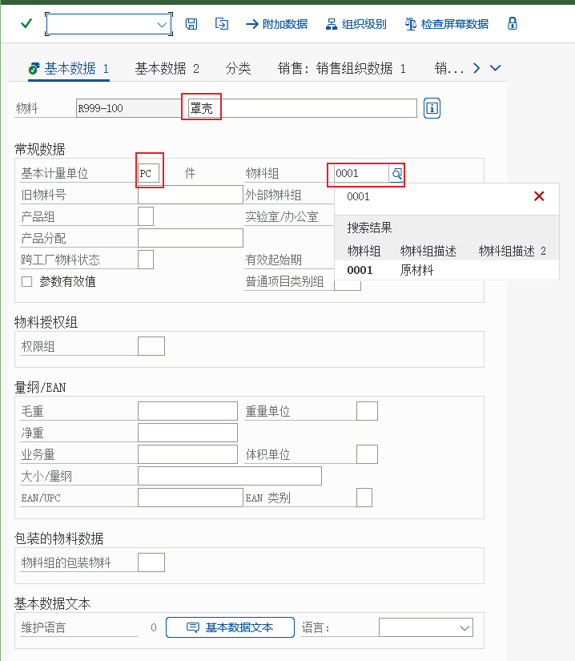
画面 612image620.png · 718×825 -
回车进入采购视图

画面 613image621.png · 647×692 -
回车进入 MRP1 视图

画面 614image622.png · 631×689 踩坑提醒批量：采购批量大小的确定原则是一个非常复杂的问题，SAP 提供了非常灵活的工具，必然按期间的，动态的，固定的 GROFF 法，补货至最大库存的等等，这里我们选择 EX（直接按批订货量），逐批确定的方法，即按照具体需求量大小，结合最大最小批量等因素确定本次批量大小的方法。 -
MRP 类型：SAP 内置了八大类物料计划的方法，如重订货点计划，基于预测的计划，时间阶段计划，MRP，MPS，零售补货计划，无 MRP，无 MRP BOM 展开等。根据这八大类方法，可以在后台配置中定义具体的 MRP 类型“PD(物料需求计划) ”。实际项目中还需要特别区分 MPS 和MRP 的关系。

画面 615image623.png · 690×752 -
物料类型决定了物料是自生产还是外采购，这里的 F 代表只能从外采购，100 代表 100 件安全库存
按回车进入 MRP3 视图
画面 616image624.png · 653×555 -
可用性检查是否有足够的库存来支持生产。主要有按期间需求和按单独需求两类，但是检查的规则在 SAP 中有灵活的配置。
按回车进入“会计 1”视图 ,此处一定要维护评估类，原书有误，原材料的评估类为3000
画面 617image625.png · 657×604 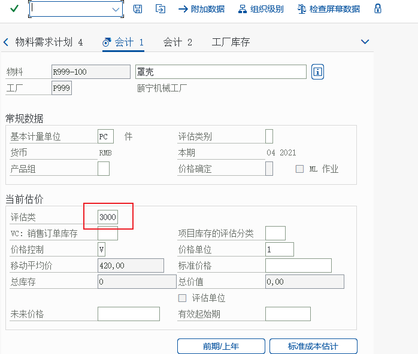
画面 618image626.png · 698×592 教材笔记V 代表按移动平均价计价，S 代表以标准成本计价。教材笔记价格单位：当单价特别小的时候，可以按 10 个，100 个价格单位计价，以提高价格精度。移动平均价：这里填的是初始价格，将来的移动平均价是系统自动计算的。教材笔记物料R999-200飞轮评估类型为3000物料R999-300管轴评估类型为3000物料物料R999-400 R999-500支撑架金属片单位是M2评估类型为3000评估类型为3000物料R999-200飞轮评估类型为3000物料R999-300管轴评估类型为3000物料物料R999-400 R999-500支撑架金属片单位是M2评估类型为3000评估类型为3000依次创建 R999-200---R999-500
前台
新建贸易商品主数据
12 画面 / 5 步-

画面 619image627.png · 477×376 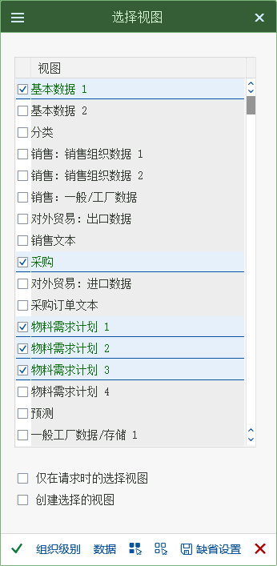
画面 620image630.png · 346×707 
画面 621image631.png · 543×356 
画面 622image632.png · 332×524 画面 620image630.png · 346×707 画面 621image631.png · 543×356 -
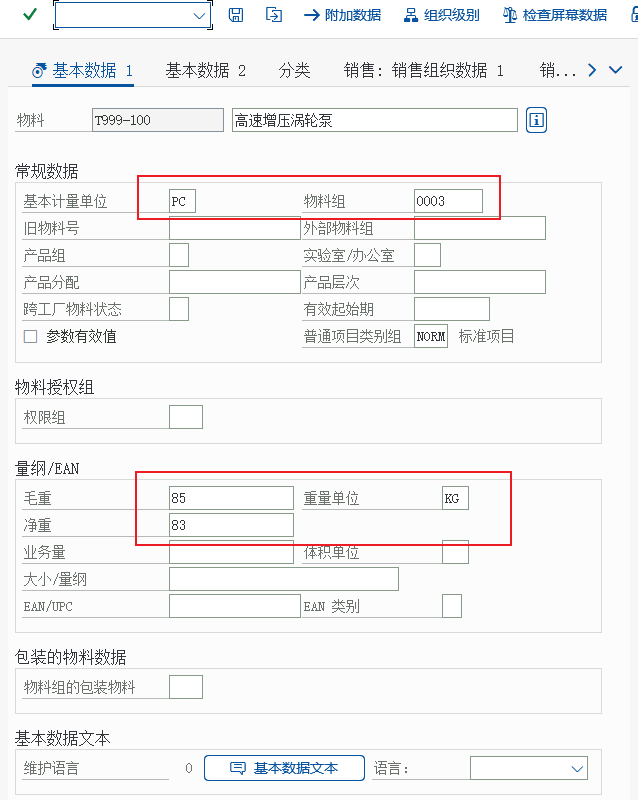
画面 625image633.png · 638×800 -
颐宁公司除了自己生产泵以外，还经销其他厂家的高速增压涡轮泵。前台
后勤－物料管理－物料主数据－物料－创建（特殊）－MMH1-贸易货物
画面 626image634.png · 637×700 -
按上一屏继续操作（画面 630）

画面 630image638.png · 635×600


新建产成品主数据
10 画面 / 4 步-
颐宁公司生产的产品是“铸钢泵 170-230 ” 前台

画面 631image639.png · 362×481 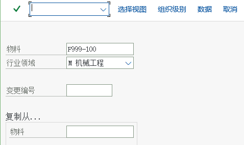
画面 632image640.png · 478×284 -
按上一屏继续操作（画面 639）

画面 639image647.png · 664×606 
画面 640image648.png · 672×621 教材笔记成本核算批量，指以 10 个为标准批量来核算成本


显示物料主记录清单
前台MM603 画面 / 1 步-

画面 641image649.png · 341×577 
画面 642image650.png · 608×287 
画面 643image651.png · 932×276
创建供应商采购数据
前台MK018 画面 / 5 步-
解释： 红星轴承厂是原材料供应商，在未使用 SAP 物料管理模块时，我们已经在财务中维护了它的主数据，但当时只维护了一般数据和公司代码数据（和财务相关的），现在我们要使用采购功能来管理他的采购行为，只需要维护它的采购数据。
后勤－物料管理－采购－主数据－供应商－采购-MK01 创建
画面 644image652.png · 367×512 -
10000000

画面 645image655.png · 326×313 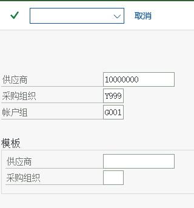
画面 646image656.png · 320×343 画面 645image655.png · 326×313 画面 646image656.png · 320×343 -
按上一屏继续操作（画面 649）

画面 649image657.png · 659×870 -
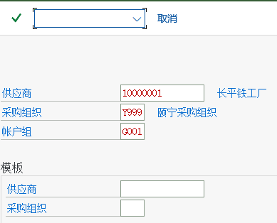
画面 650image658.png · 389×314 -
同时将其他供应商维护好，10000001，20000000

画面 651image659.png · 517×330
新建采购信息记录
前台ME11MM0216 画面 / 9 步-
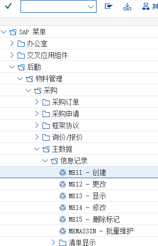
画面 652image660.png · 324×504 -
解释： 颐宁向红星采购管轴，一般标准订单数量 50 件，净价 1700 元/件，3 天内交货，由采购组 PG1 负责。
后勤－物料管理－采购－主数据－信息记录－ME11 创建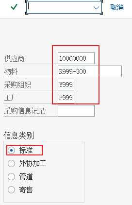
画面 653image661.png · 272×422 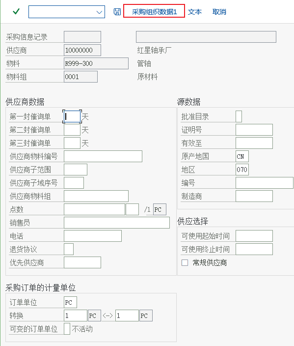
画面 654image662.png · 599×704 -
解释： 屏幕中显示的是维护一些和采购组织无关的一般数据，如供应商数据，原产地数据，单位转换等。
点击采购组织数据 1 键，出现如下屏幕：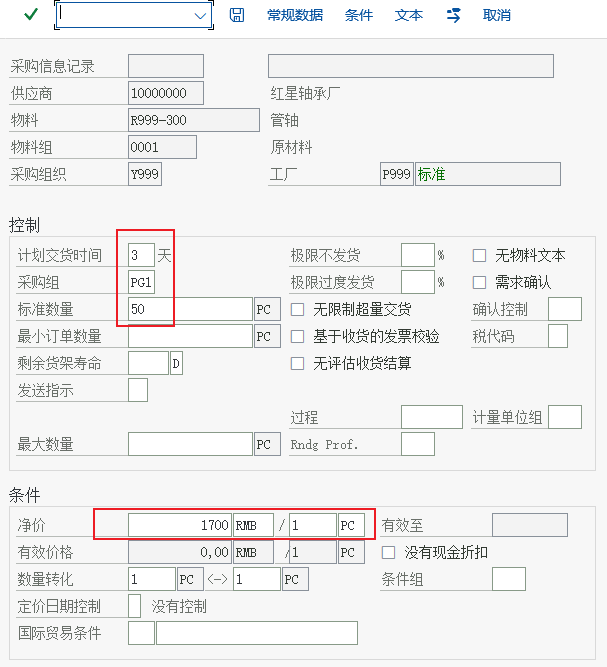
画面 655image663.png · 607×667 -
同样的方法把 R999-100－R999-500 及 T999-100 创建

画面 656image666.png · 294×431 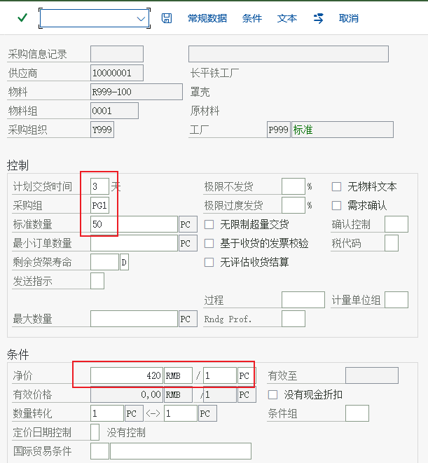
画面 657image667.png · 611×661 画面 656image666.png · 294×431 画面 657image667.png · 611×661 -
第二个物料的采购信息记录

画面 660image668.png · 273×427 -
按上一屏继续操作（画面 661）
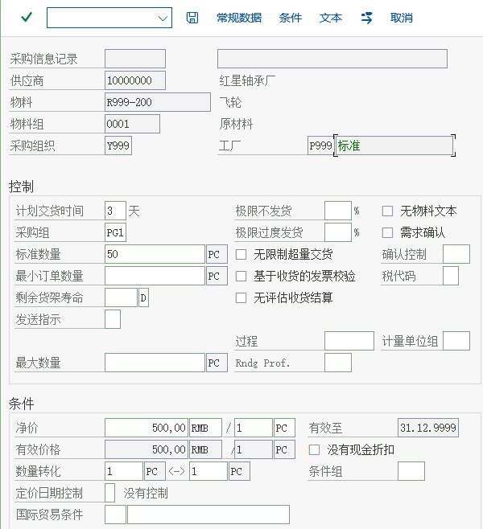
画面 661image669.png · 600×658 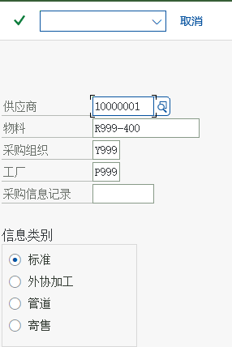
画面 662image670.png · 286×428 
画面 663image671.png · 603×653 
画面 664image672.png · 290×426 教材笔记第三个物料的采购信息记录教材笔记第四个物料的采购信息记录 -
通过事务代码MM02更正

画面 665image673.png · 601×655 -
第五个物料的采购信息记录

画面 666image674.png · 300×425 -
按上一屏继续操作（画面 667）

画面 667image675.png · 598×652
维护物料管理的自动记帐
后台15 画面 / 13 步12110101 存货－原材料
12310101 存货－贸易商品
AUF 是和生产完工入库相关的，41010801 生产成本－产成品产出
| 项目 | 文档中的取值 |
|---|---|
| 进入 | PRD |
-
解释： 主数据维护好了，在开始业务之前，还有一些必须的系统配置要做，本步骤就是设置 SAP 中最为重要的集成配置之一，即物料移动在 SAP 中如何自动找到会计科目完成自动记帐。它的准备工作在 1.19、1.20、1.21 中已经维护好了。
物料管理－评估和科目设置－科目确定－无向导的科目确定－配置自动记帐
画面 668image676.png · 340×503 教材笔记如果出现一个屏幕不是下面的屏幕，点击取消即可。这个屏幕不一定会出现的，原因是有时候系统中其他的公司代码的配置不完整造成的，点击取消就行了。 -
按上一屏继续操作（画面 669）
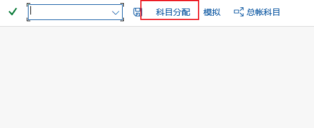
画面 669image677.png · 517×211 -
解释： “ 科目分配” 按钮中是正式的科目分配工作，但是对于初学者来 “ 模拟” 按钮很重要，在模拟按钮中你可以输入物料、工厂、移动类型等，系统会提示你在“科目分配”中如何定义科目。
点击“科目分配”
画面 670image678.png · 626×855 -
双击“存货记帐 BSX”行，弹出如下屏幕：

画面 671image679.png · 333×221 画面 672image680.png · 527×258 -
解释： 屏幕中科目分配被按“事务”分类。我们首先定义存货记帐。因为物料移动总和存货科目相关，所以凭证中总有一行是存货科目行，我们定义系统如何确定存货科目。
解释：在这个屏幕中，我们明确存货科目是否受“评估修改”和“评估级别”的影响，这里我们选择受这两者的影响。
画面 673image681.png · 609×312 -
12430101 存货－产成品
屏幕中显示的是我们定义的各种存货科目，保存后点击返回。
画面 674image682.png · 643×463 -
解释： 物料采购会涉及材料采购科目（GR/IR）这是在“WRX”中维护的。 双击事务“货物发票清算科目 WRX”行，进入如下屏幕

画面 675image683.png · 727×469 -
按上一屏继续操作（画面 676）

画面 676image684.png · 541×292 教材笔记12010101 材料采购－GR/IR点击返回 -
点击保存

画面 677image685.png · 621×382 -
解释： 和物料移动相关的会计凭证除了库存这一行，对应的那行的会计科目在 “ GBB”中维护，必然生产成本、主营业务成本等。
双击事务“库存记帐的冲销输入 GBB 行”，进入如下屏幕
画面 678image686.png · 606×296 -
按上一屏继续操作（画面 679）
画面 679image687.png · 607×304 教材笔记VBR 是和生产发货相关的，41010101 生产成本－原材料消耗点击保存，返回按钮。 -
VAX是和销售出库相关的，54010201 主营业务成本－贸易商品
54010101 主营业务成本－自制产品
画面 680image688.png · 640×409 -
按上一屏继续操作（画面 681）

画面 681image689.png · 509×277 
画面 682image690.png · 593×273 教材笔记54010301 主营业务成本－采购价差教材笔记54010401 主营业务成本－生产订单差异
将存货科目设置为只能自动记帐
前台FS003 画面 / 2 步-
会计核算－财务会计－总账－主记录－总账科目－单个处理－FS00 集中的

画面 683image691.png · 324×298 画面 684image692.png · 626×490 -
解释： 启用物料管理后，有些会计科目是通过集成自动记帐的，在会计科目主数据中需要设置条目为“只能自动记帐”
选择“创建/银行/利息”，如图所示：12110101
画面 685image693.png · 640×622 教材笔记检查 12310101 和 12430101，也设置自动记帐
设置采购价格差异的容差限制
后台6 画面 / 3 步解释：SAP 在处理采购订单时，会检查采购订单中的价格和物料主数据中的成本价格差异有多大，同时也会检查采购订单中的现金折扣是否可接受。如果差异超过一定的容差，系统将发出警告消息或者报错消息。不同的容差检查存放在“容差码”中，容差码“PE ” 是检 查价格的，“ SE ” 是检查现金折扣的。
-
物料管理－采购－采购订单－设置价格差异的容差限制
-
解释： 屏幕中已经有公司维护了，我们采用复制模板公司 0001 公司的方法。选中 0001 公司，TlKy（容差码）为 PE 的价格差异，采购行，复制。
解释：容差分上限和下限，同时绝对差异和百分比差异只要有一个超出就认为容差被超出了。
画面 690image698.png · 602×568 -
重复上述方法，复制容差限制 SE 最大现金贴现减少（采购）到公司代码 C999

画面 691image699.png · 646×558

设置收货的容差限制
后台5 画面 / 4 步-

画面 692image700.png · 462×395 -
解释： SAP 允许采购订单定价数量单位和采购订单数量单位不同，比如采购订单数量是按件，但是定价是按公斤。在这种情况下，当收货时，两种单位的数量都需要输入。在收货时，系统会检查定价数量和采购订单中的差异，容差码 “ B1 ” 被超出会发出错误信息，“ B2 ” 被超出时会发出警告消息。这里我们采用复制模板公司 0001 的方式建立颐宁公司的收货容差限制。
物料管理－库存管理和实际库存－收货－设置容差限制画面 693image701.png · 621×605 -
选中 B1、B2 复制，修改公司名称为C999，然后回车姐
画面 694image702.png · 568×612 
画面 695image703.png · 569×553 -
按上一屏继续操作（画面 696）

画面 696image704.png · 612×160
设置发票冻结的容差限制
后台18 画面 / 6 步-
物料管理－后勤发票校验－发票冻结－设置容差限制

画面 697image705.png · 298×525 -

画面 698image706.png · 406×373 
画面 699image707.png · 416×376 
画面 700image708.png · 580×410 -
屏幕中显示的是已经存在的容差控制的公司代码清单。
选择公司代码 0110，TlKy 为 AN、AP、BD、BR、BW、DQ、DW、KW、PP、PS、ST、VP
画面 701image709.png · 595×544 -

画面 709image719.png · 586×569 
画面 710image720.png · 562×565 画面 709image719.png · 586×569 画面 710image720.png · 562×565 -
按上一屏继续操作（画面 713）

画面 713image721.png · 550×548 
画面 714image722.png · 389×380


维护项目金额检查
后台3 画面 / 3 步-
物料管理－后勤发票校验－发票冻结－项目金额检查－激活项目金额检查

画面 715image723.png · 300×491 -
按上一屏继续操作（画面 716）
画面 716image724.png · 445×231 -
点击新条目，将颐宁公司添加进来

画面 717image725.png · 486×137
运行物料需求计划
前台MD0310 画面 / 4 步-
后勤－物料管理－物料需求计划（MRP）－物料需求计划－计划－MD03 单层
画面 718image726.png · 288×505 
画面 719image727.png · 593×491 -
解释： 现在颐宁机械工厂里各种物料的库存都是 0，但是很多物料都要求有安全库存，现在来运行一下 MRP，看一下结果。由于 BOM 要等到生产计划模块维护，现在不能按 BOM 展开，所以是单层计划
回车后，系统会提示检查参数，再次回车画面 720image728.png · 616×935 -
按上一屏继续操作（画面 721）

画面 721image729.png · 286×105 -
同样的方法对 T999-100、R999-100、R999-200、R999-300、R999-400、R999-500 运行计划


显示库存/需求清单
前台MD043 画面 / 3 步-
解释： 上个 MRP 的运行是定期进行的，例如每天晚上，他的结果在系统中也是静态保存的。要看动态的物料的供需平衡清单，需要到 SAP“库存/需求清单”中来显示
后勤－生产－物料需求计划－评估－MD04-库存/需求清单
画面 728image736.png · 457×729 -
按上一屏继续操作（画面 729）

画面 729image737.png · 404×286 -
这个页面和 MRP 运行结果类似，但是它可以动态运行，数据反应的是当前供需的情况。运行后采购申请可生成，也可手工生成。
画面 730image738.png · 1155×334 教材笔记回车后进入如下页面
新建采购申请
ME51N6 画面 / 6 步解释：MRP 运行的结果是对原材料的采购申请和对产成品的计划订单，所以生成计划和采购的流程衔接是采购申请的创建。在 PP 模块的学习中我们将根据 MRP 产生的采购申请直接来创建采购订单。现在我们的流程从手工新建采购申请开始。本步骤中，颐宁公司的计划
-
部门手工填制采购申请，申请采购一批原材料和贸易商品前台
后勤－物料管理－采购--采购申请－ME51N－创建
画面 731image739.png · 265×219 -
第一次进入页面会有帮助，可关闭

画面 732image740.png · 808×404 原理说明解释：采购申请的屏幕主要包含最上方的 “ 单据类型和单据号” 行和抬头信息。项目概览信息和项目明细信息三层。点击左侧按钮可展开或收起输入界面。 -
点击项目概览按钮，进入如下页面：

画面 733image741.png · 1150×710 -
在项目概览里，输入申请采购的物料，数量，交货日期和交货工厂等信息，录入如下：

画面 734image742.png · 1097×348 -
点击回车键，各个明细行会被展开

画面 735image743.png · 1075×336 教材笔记点击保存，提示如下： -
按上一屏继续操作（画面 736）
画面 736image744.png · 243×34
新建采购订单
前台ME21N9 画面 / 8 步-
解释： 根据计划部门的采购申请，采购部门需要向供应商采购，这其中有一个“货源确定”的问题，即向哪个供应商采购。SAP 有多种货源确定的方式。在我们的例子里，我们采用人为选择供应商的方式，即由采购部门在创建采购订单的时候，手工录入供应商
后勤－物料管理－采购－采购订单－创建－ME21N－已知供应商/供应工厂
画面 737image745.png · 989×263 -
新建采购订单和采购申请页面类似，但是凭证类型不同，而且多了供应商字段点击凭证概览打开键，出现如下屏幕

画面 738image746.png · 1008×301 -
点击左栏小花键，如下左图，然后选择我的采购申请，如下右边的图
画面 739image747.png · 362×531 画面 740image748.png · 363×410 -
解释： 凭证概览是方便操作人员的各种工具。我们可以用各种方法来查找采购订单，采购申请，框架协议等，这里我们选择自己创建的采购申请。
选择左侧的采购申请点击采用按钮（采购申请上部类似复制的按钮，小花按钮边上的按钮）画面 741image749.png · 1066×398 -
回车后，如下图所示
画面 742image750.jpeg · 1347×533 -
输入采购组织 Y999，供应商 10000000
点击项目概览，如下图所示
画面 743image751.png · 1157×364 -
按上一屏继续操作（画面 744）

画面 744image752.png · 459×235 -
此处应该是原材料的采购，可将 T999-100 删除。点击保存即可生成相应的采购订单。
画面 745image753.png · 278×31
创建采购收货
MIGO8 画面 / 7 步-
后勤－物料管理－库存管理－货物移动－收货－对采购订单－采购订单的 GR（MIGO）

画面 746image754.png · 411×433 
画面 747image755.png · 1295×546 -
解释： 上一步我们创建了采购订单，现在供应商把货送到了，我们需要办理收货前台
解释：上图就是采购订单收货的屏幕，屏幕右上方输入采购订单号和工厂，屏幕中间是物料凭证的行总揽，屏幕下方是个收货行的明细，屏幕的左方是你自己处理过的采购订单和物料凭证的历史。我们来输入采购订单号
画面 748image756.png · 882×114 -
按上一屏继续操作（画面 749）
画面 749image757.jpeg · 1304×526 -
采购订单行的明细被自动复制到了屏幕下方，我们在行项目明细的屏幕中填写相关信息。输入库存地点 001，注意，每一行都要做相同的操作

画面 750image758.jpeg · 1401×924 -
勾上项目确定选项（左下角），点击保存按钮，保存之前最好点个检查，看看是否有误

画面 751image759.jpeg · 1320×955 -
将屏幕上方的收货改为显示A04，点击回车，然后将标签页切换到文件信息

画面 752image760.jpeg · 1351×788 -
在文件信息页，点击 FI 凭证，可以看到凭证的信息
画面 753image761.png · 753×584
输入采购发票
MIRO5 画面 / 4 步-
解释： 供应商的采购发票随后送到前台
后勤－物料管理－后勤发票校验－凭证输入－MIRO 输入发票画面 754image762.png · 315×211 
画面 158image161.png · 228×194 教材笔记在PO参考里面，按照下图输入采购订单，然后点击回车。 -
按上一屏继续操作（画面 756）

画面 756image763.png · 882×691 -
先选中计算税额，按回车键，将余额处的金额拷贝在金额处，点击回车

画面 757image764.png · 985×759 -
按上一屏继续操作（画面 758）

画面 758image765.jpeg · 1149×941 教材笔记点击保存，如果出现超过容差的情况，发票会冻结
下达冻结发票
MRBR4 画面 / 2 步-
后勤－物料管理－后勤发票校验－进一步处理－MRBR 下达冻结发票
画面 759image766.png · 405×548 -
按上一屏继续操作（画面 760）
教材笔记选中后点击小绿旗，然后保存教材笔记这样发票就被下达了。


{kind=link}
{kind=link}
{kind=link}
{kind=link}
{kind=link}
{kind=link}
{kind=link}
{kind=link}
{kind=link}
{kind=link}
{kind=link}
{kind=link}
{kind=link}
{kind=link}
{kind=link}
{kind=link}
{kind=link}
{kind=link}
{kind=link}
{kind=link}
{kind=link}
{kind=link}
{kind=link}
{kind=link}
{kind=link}
{kind=link}
{kind=link}
{kind=link}
{kind=link}
{kind=link}
{kind=link}
{kind=link}
{kind=link}
{kind=link}
{kind=link}
{kind=link}
{kind=link}
{kind=link}
{kind=link}
{kind=link}
{kind=link}
{kind=link}
{kind=link}
{kind=link}
{kind=link}
{kind=link}
{kind=link}
{kind=link}
{kind=link}
{kind=link}
{kind=link}
{kind=link}
{kind=link}
{kind=link}
{kind=link}
{kind=link}
{kind=link}
{kind=link}
{kind=link}
{kind=link}
{kind=link}
{kind=link}
{kind=link}
{kind=link}
{kind=link}
{kind=link}
{kind=link}
{kind=link}
{kind=link}
{kind=link}
{kind=link}
{kind=link}
{kind=link}
显示发票和会计凭证
4 画面 / 4 步-
解释： 发票校验也会自动生成会计凭证，本步骤进一步展示前面输入的发票及产生的凭证前台
后勤－物料管理－后勤发票校验－进一步处理－MIR4 显示发票凭证
画面 763image770.jpeg · 472×422 -
按上一屏继续操作（画面 764）

画面 764image771.png · 453×170 -
选择显示凭证

画面 765image772.jpeg · 1084×787 教材笔记点击后续凭证，出现会计凭证概览 -
按上一屏继续操作（画面 766）

画面 766image773.jpeg · 926×594
显示库存物料
前台MMBE3 画面 / 3 步-
后勤－物料管理－库存管理－环境－库存－MMBE－库存总览

画面 767image774.png · 396×451 -
画面 768image775.jpeg · 742×836 -
按上一屏继续操作（画面 769）

画面 769image776.jpeg · 1178×544
{kind=link}
4. 关于截图与取值
S4.docx 中作者在真实系统里截取的中文界面画面（原始文件名 imageNNN.png 保留在每张图的图注里，可与 Word 原文逐张对照）。本站没有对这些画面做任何重绘或模拟。C999、公司名「颐宁机械有限公司」、工厂 F999、物料 R999-100/T999-100/F999-100、客户 K001/K002 等）都来自原作者的教材环境。照着手顺做时，操作顺序与配置点可以照搬，具体编号/名称请换成你自己系统里的值；遇到与文档不同的提示消息，先看「排错与踩坑」页里原文档记录的同类问题。